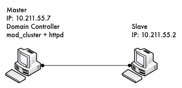
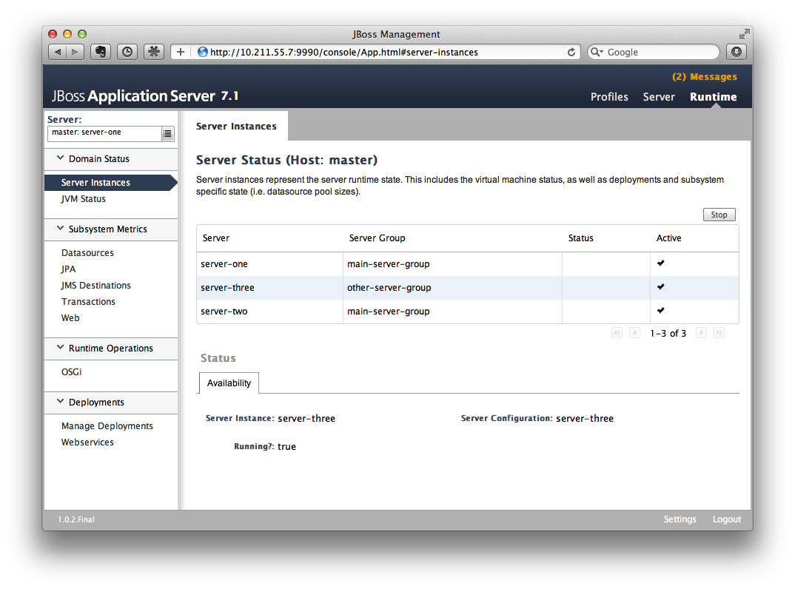
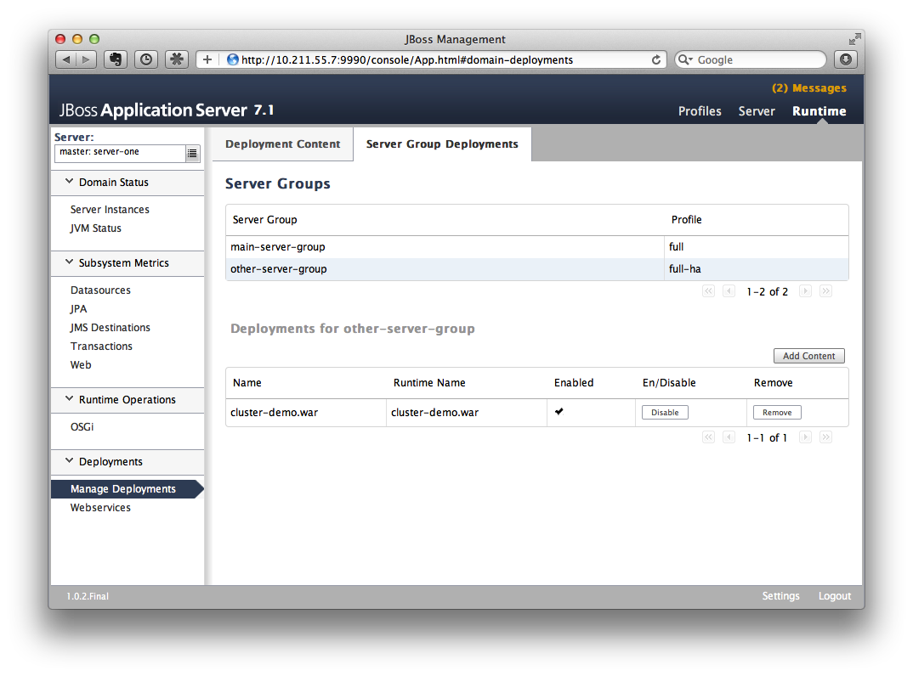
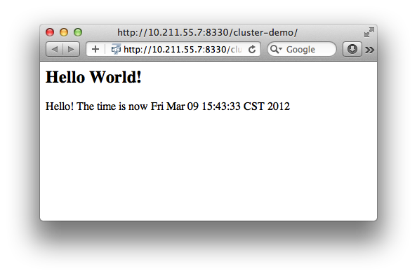
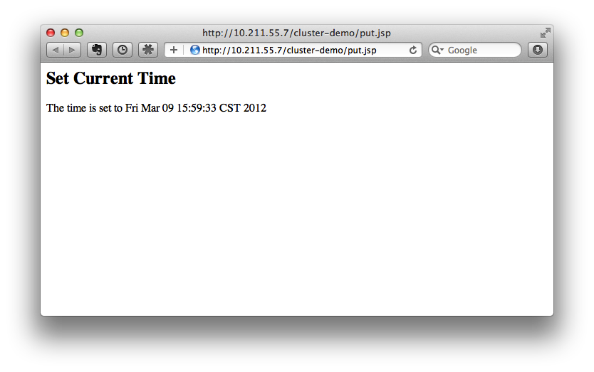
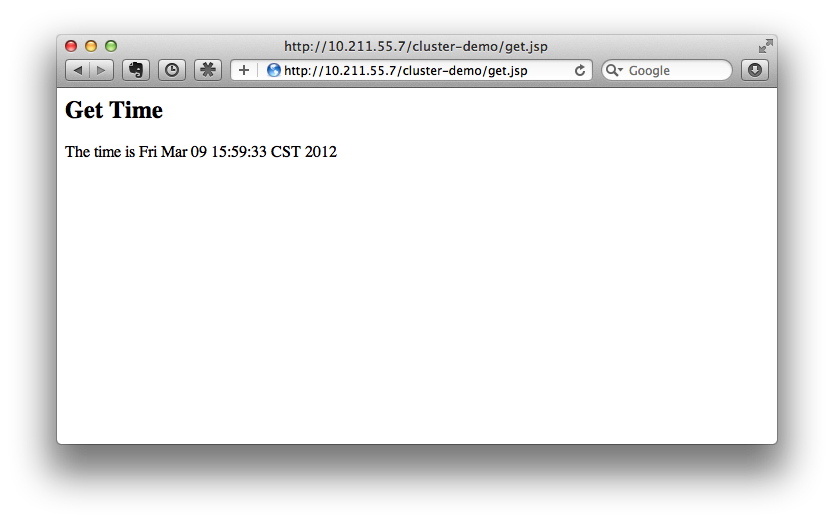

http://wildfly.org/downloads/
In this article, I'd like to show you how to setup WildFly 9 in domain mode and enable clustering so we could get HA and session replication among the nodes. It's a step to step guide so you can follow the instructions in this article and build the sandbox by yourself 
Preparation & Scenario
Preparation
We need to prepare two hosts (or virtual hosts) to do the experiment. We will use these two hosts as following:
-
Install Fedora 16 on them (Other linux version may also fine but I'll use Fedora 16 in this article)
-
Make sure that they are in same local network
-
Make sure that they can access each other via different TCP/UDP ports(better turn off firewall and disable SELinux during the experiment or they will cause network problems).
Scenario
Here are some details on what we are going to do:
-
Let's call one host as 'master', the other one as 'slave'.
-
Both master and slave will run WildFly 9, and master will run as domain controller, slave will under the domain management of master.
-
Apache httpd will be run on master, and in httpd we will enable the mod_cluster module. The WildFly 9 on master and slave will form a cluster and discovered by httpd.

-
We will deploy a demo project into domain, and verify that the project is deployed into both master and slave by domain controller. Thus we could see that domain management provide us a single point to manage the deployments across multiple hosts in a single domain.
-
We will access the cluster URL and verify that httpd has distributed the request to one of the WildFly host. So we could see the cluster is working properly.
-
We will try to make a request on cluster, and if the request is forwarded to master, we then kill the WildFly process on master. After that we will go on requesting cluster and we should see the request is forwarded to slave, but the session is not lost. Our goal is to verify the HA is working and sessions are replicated.
-
After previous step finished, we reconnect the master by restarting it. We should see the master is registered back into cluster, also we should see slave sees master as domain controller again and connect to it.

Please don't worry if you cannot digest so many details currently. Let's move on and you will get the points step by step.
Download WildFly 9
First we should download WildFly 9 from the website:
The version I downloaded is WildFly 9.0.0.Final.
After download finished, I got the zip file:
wildfly-9.0.0.Final.zip
Note: The name of your archive will differ slightly due to version naming conventions.
Then I unzipped the package to master and try to make a test run:
unzip wildfly-9.0.0.Final.zip cd wildfly-9.0.0.Final/bin ./domain.sh
If everything ok we should see WildFly successfully startup in domain mode:
wildfly-9.0.0.Final/bin$ ./domain.sh ========================================================================= JBoss Bootstrap Environment JBOSS_HOME: /Users/weli/Downloads/wildfly-9.0.0.Final JAVA: /Library/Java/Home/bin/java JAVA_OPTS: -Xms64m -Xmx512m -XX:MaxPermSize=256m -Djava.net.preferIPv4Stack=true -Dorg.jboss.resolver.warning=true -Dsun.rmi.dgc.client.gcInterval=3600000 -Dsun.rmi.dgc.server.gcInterval=3600000 -Djboss.modules.system.pkgs=org.jboss.byteman -Djava.awt.headless=true ========================================================================= ... [Server:server-two] 14:46:12,375 INFO [org.jboss.as] (Controller Boot Thread) JBAS015874: WildFly 9.0.0.Final "Kenny" started in 8860ms - Started 210 of 258 services (89 services are lazy, passive or on-demand)
Now exit master and let's repeat the same steps on slave host. Finally we get WildFly 9 run on both master and slave, then we could move on to next step.
Domain Configuration
Interface config on master
In this section we'll setup both master and slave for them to run in domain mode. And we will configure master to be the domain controller.
First open the host.xml in master for editing:
vi domain/configuration/host.xml
The default settings for interface in this file is like:
<interfaces>
<interface name="management">
<inet-address value="${jboss.bind.address.management:127.0.0.1}"/>
</interface>
<interface name="public">
<inet-address value="${jboss.bind.address:127.0.0.1}"/>
</interface>
<interface name="unsecured">
<inet-address value="127.0.0.1" />
</interface>
</interfaces>
We need to change the address to the management interface so slave could connect to master. The public interface allows the application to be accessed by non-local HTTP, and the unsecured interface allows remote RMI access. My master's ip address is 10.211.55.7, so I change the config to:
<interfaces>
<interface name="management"
<inet-address value="${jboss.bind.address.management:10.211.55.7}"/>
</interface>
<interface name="public">
<inet-address value="${jboss.bind.address:10.211.55.7}"/>
</interface>
<interface name="unsecured">
<inet-address value="10.211.55.7" />
</interface>
</interfaces>
Interface config on slave
Now we will setup interfaces on slave. Let's edit host.xml. Similar to the steps on master, open host.xml first:
vi domain/configuration/host.xml
The configuration we'll use on slave is a little bit different, because we need to let slave connect to master. First we need to set the hostname. We change the name property from:
<host name="master" xmlns="urn:jboss:domain:3.0">
to:
<host name="slave" xmlns="urn:jboss:domain:3.0">
Then we need to modify domain-controller section so slave can connect to master's management port:
<domain-controller> <remote protocol="remote" host="10.211.55.7" port="9999" /> </domain-controller>
As we know, 10.211.55.7 is the ip address of master.
You may use discovery options to define multiple mechanisms to connect to the remote domain controller :
<domain-controller>
<remote security-realm="ManagementRealm" >
<discovery-options>
<static-discovery name="master-native" protocol="remote" host="10.211.55.7" port=9999" />
<static-discovery name="master-https" protocol="https-remoting" host="10.211.55.7" port="9993" security-realm="ManagementRealm"/>
<static-discovery name="master-http" protocol="http-remoting" host="10.211.55.7" port="9990" />
</discovery-options>
</remote>
</domain-controller>
Finally, we also need to configure interfaces section and expose the management ports to public address:
<interfaces>
<interface name="management">
<inet-address value="${jboss.bind.address.management:10.211.55.2}"/>
</interface>
<interface name="public">
<inet-address value="${jboss.bind.address:10.211.55.2}"/>
</interface>
<interface name="unsecured">
<inet-address value="10.211.55.2" />
</interface>
</interfaces>
10.211.55.2 is the ip address of the slave. Refer to the domain controller configuration above for an explanation of the management, public, and unsecured interfaces.
It is easier to turn off all firewalls for testing, but in production, you need to enable the firewall and allow access to the following ports: 9999.
Security Configuration
If you start WildFly on both master and slave now, you will see the slave cannot be started with following error:
[Host Controller] 20:31:24,575 ERROR [org.jboss.remoting.remote] (Remoting "endpoint" read-1) JBREM000200: Remote connection failed: javax.security.sasl.SaslException: Authentication failed: all available authentication mechanisms failed [Host Controller] 20:31:24,579 WARN [org.jboss.as.host.controller] (Controller Boot Thread) JBAS010900: Could not connect to remote domain controller 10.211.55.7:9999 [Host Controller] 20:31:24,582 ERROR [org.jboss.as.host.controller] (Controller Boot Thread) JBAS010901: Could not connect to master. Aborting. Error was: java.lang.IllegalStateException: JBAS010942: Unable to connect due to authentication failure.
Because we haven't properly set up the authentication between master and slave. Now let's work on it:
Master
In bin directory there is a script called add-user.sh, we'll use it to add new users to the properties file used for domain management authentication:
./add-user.sh
Enter the details of the new user to add.
Realm (ManagementRealm) :
Username : admin
Password recommendations are listed below. To modify these restrictions edit the add-user.properties configuration file.
- The password should not be one of the following restricted values {root, admin, administrator}
- The password should contain at least 8 characters, 1 alphabetic character(s), 1 digit(s), 1 non-alphanumeric symbol(s)
- The password should be different from the username
Password : passw0rd!
Re-enter Password : passw0rd!
The username 'admin' is easy to guess
Are you sure you want to add user 'admin' yes/no? yes
About to add user 'admin' for realm 'ManagementRealm'
Is this correct yes/no? yes
Added user 'admin' to file '/home/weli/projs/wildfly-9.0.0.Final/standalone/configuration/mgmt-users.properties'
Added user 'admin' to file '/home/weli/projs/wildfly-9.0.0.Final/domain/configuration/mgmt-users.properties'
As shown above, we have created a user named 'admin' and its password is 'passw0rd!'. Then we add another user called 'slave':
./add-user.sh
Enter the details of the new user to add.
Realm (ManagementRealm) :
Username : slave
Password recommendations are listed below. To modify these restrictions edit the add-user.properties configuration file.
- The password should not be one of the following restricted values {root, admin, administrator}
- The password should contain at least 8 characters, 1 alphabetic character(s), 1 digit(s), 1 non-alphanumeric symbol(s)
- The password should be different from the username
Password : passw0rd!
Re-enter Password : passw0rd!
What groups do you want this user to belong to? (Please enter a comma separated list, or leave blank for none)[ ]:
About to add user 'slave' for realm 'ManagementRealm'
Is this correct yes/no? yes
Added user 'slave' to file '/home/weli/projs/wildfly-9.0.0.Final/standalone/configuration/mgmt-users.properties'
Added user 'slave' to file '/home/weli/projs/wildfly-9.0.0.Final/domain/configuration/mgmt-users.properties'
Added user 'slave' with groups to file '/home/weli/projs/wildfly-9.0.0.Final/standalone/configuration/mgmt-groups.properties'
Added user 'slave' with groups to file '/home/weli/projs/wildfly-9.0.0.Final/domain/configuration/mgmt-groups.properties'
Is this new user going to be used for one AS process to connect to another AS process?
e.g. for a slave host controller connecting to the master or for a Remoting connection for server to server EJB calls.
yes/no? yes
To represent the user add the following to the server-identities definition <secret value="cGFzc3cwcmQh" />
We will use this user for slave host to connect to master. The add-user.sh will let you choose the type of the user. Here we need to choose 'Management User' type for both 'admin' and 'slave' account.
Slave
In slave we need to configure host.xml for authentication. We should change the security-realms section as following:
<security-realms>
<security-realm name="ManagementRealm">
<server-identities>
<secret value="cGFzc3cwcmQh" />
<!-- This is required for SSL remoting -->
<ssl>
<keystore path="server.keystore" relative-to="jboss.domain.config.dir" keystore-password="jbossas" alias="jboss" key-password="jbossas"/>
</ssl>
</server-identities>
<authentication>
<properties path="mgmt-users.properties" relative-to="jboss.domain.config.dir"/>
</authentication>
</security-realm>
</security-realms>
We've added server-identities into security-realm, which is used for authentication host when slave tries to connect to master. In secret value property we have 'cGFzc3cwcmQh', which is the base64 code for 'passw0rd!'. You can generate this value by using a base64 calculator such as the one at http://www.webutils.pl/index.php?idx=base64.
Then in domain controller section we also need to add security-realm property:
<domain-controller> <remote protocol="remote" host="10.211.55.7" port="9999" username="slave" security-realm="ManagementRealm" /> </domain-controller>
So the slave host could use the authentication information we provided in 'ManagementRealm'.
Dry Run
Now everything is set for the two hosts to run in domain mode. Let's start them by running domain.sh on both hosts. If everything goes fine, we could see from the log on master:
[Host Controller] 21:30:52,042 INFO [org.jboss.as.domain] (management-handler-threads - 1) JBAS010918: Registered remote slave host slave
That means all the configurations are correct and two hosts are run in domain mode now as expected. Hurrah!
Deployment
Now we can deploy a demo project into the domain. I have created a simple project located at:
https://github.com/liweinan/cluster-demo
We can use git command to fetch a copy of the demo:
git clone git://github.com/liweinan/cluster-demo.git
In this demo project we have a very simple web application. In web.xml we've enabled session replication by adding following entry:
<distributable/>
And it contains a jsp page called put.jsp which will put current time to a session entry called 'current.time':
<%
session.setAttribute("current.time", new java.util.Date());
%>
Then we could fetch this value from get.jsp:
The time is <%= session.getAttribute("current.time") %>
It's an extremely simple project but it could help us to test the cluster later: We will access put.jsp from cluster and see the request are distributed to master, then we disconnect master and access get.jsp. We should see the request is forwarded to slave but the 'current.time' value is held by session replication. We'll cover more details on this one later.
Let's go back to this demo project. Now we need to create a war from it. In the project directory, run the following command to get the war:
mvn package
It will generate cluster-demo.war. Then we need to deploy the war into domain. First we should access the http management console on master(Because master is acting as domain controller):
http://10.211.55.7:9990
It will popup a windows ask you to input account name and password, we can use the 'admin' account we've added just now. After logging in we could see the 'Server Instances' window. By default there are three servers listed, which are:
-
server-one
-
server-two
-
server-three
We could see server-one and server-two are in running status and they belong to main-server-group; server-three is in idle status, and it belongs to other-server-group.
All these servers and server groups are set in domain.xml on master as7. What we are interested in is the 'other-server-group' in domain.xml:
<server-group name="other-server-group" profile="ha">
<jvm name="default">
<heap size="64m" max-size="512m"/>
</jvm>
<socket-binding-group ref="ha-sockets"/>
</server-group>
We could see this server-group is using 'ha' profile, which then uses 'ha-sockets' socket binding group. It enable all the modules we need to establish cluster later(including infinispan, jgroup and mod_cluster modules). So we will deploy our demo project into a server that belongs to 'other-server-group', so 'server-three' is our choice.
In newer version of WildFly, the profile 'ha' changes to 'full-ha':
<server-group name="other-server-group" profile="full-ha">
Let's go back to domain controller's management console:
http://10.211.55.7:9990
Now server-three is not running, so let's click on 'server-three' and then click the 'start' button at bottom right of the server list. Wait a moment and server-three should start now.
Now we should also enable 'server-three' on slave: From the top of menu list on left side of the page, we could see now we are managing master currently. Click on the list, and click 'slave', then choose 'server-three', and we are in slave host management page now.
Then repeat the steps we've done on master to start 'server-three' on slave.
server-three on master and slave are two different hosts, their names can be different.
After server-three on both master and slave are started, we will add our cluster-demo.war for deployment. Click on the 'Manage Deployments' link at the bottom of left menu list.

(We should ensure the server-three should be started on both master and slave)
After enter 'Manage Deployments' page, click 'Add Content' at top right corner. Then we should choose our cluster-demo.war, and follow the instruction to add it into our content repository.
Now we can see cluster-demo.war is added. Next we click 'Add to Groups' button and add the war to 'other-server-group' and then click 'save'.
Wait a few seconds, management console will tell you that the project is deployed into 'other-server-group'.：

Please note we have two hosts participate in this server group, so the project should be deployed in both master and slave now - that's the power of domain management.
Now let's verify this, trying to access cluster-demo from both master and slave, and they should all work now:
http://10.211.55.7:8330/cluster-demo/

http://10.211.55.2:8330/cluster-demo/

Now that we have finished the project deployment and see the usages of domain controller, we will then head up for using these two hosts to establish a cluster 
Why is the port number 8330 instead of 8080? Please check the settings in host.xml on both master and slave:
<server name="server-three" group="other-server-group" auto-start="false">
<!-- server-three avoids port conflicts by incrementing the ports in
the default socket-group declared in the server-group -->
<socket-bindings port-offset="250"/>
</server>
The port-offset is set to 250, so 8080 + 250 = 8330
Now we quit the WildFly process on both master and slave. We have some work left on host.xml configurations. Open the host.xml of master, and do some modifications the servers section from:
<server name="server-three" group="other-server-group" auto-start="false">
<!-- server-three avoids port conflicts by incrementing the ports in
the default socket-group declared in the server-group -->
<socket-bindings port-offset="250"/>
</server>
to:
<server name="server-three" group="other-server-group" auto-start="true">
<!-- server-three avoids port conflicts by incrementing the ports in
the default socket-group declared in the server-group -->
<socket-bindings port-offset="250"/>
</server>
We've set auto-start to true so we don't need to enable it in management console each time WildFly restart. Now open slave's host.xml, and modify the server-three section:
<server name="server-three-slave" group="other-server-group" auto-start="true">
<!-- server-three avoids port conflicts by incrementing the ports in
the default socket-group declared in the server-group -->
<socket-bindings port-offset="250"/>
</server>
Besides setting auto-start to true, we've renamed the 'server-three' to 'server-three-slave'. We need to do this because mod_cluster will fail to register the hosts with same name in a single server group. It will cause name conflict.
After finishing the above configuration, let's restart two as7 hosts and go on cluster configuration.
Cluster Configuration
We will use mod_cluster + apache httpd on master as our cluster controller here. Because WildFly 8 has been configured to support mod_cluster out of box so it's the easiest way.
The WildFly 8 domain controller and httpd are not necessary to be on same host. But in this article I just install them all on master for convenience.
First we need to ensure that httpd is installed:
sudo yum install httpd
And then we need to download newer version of mod_cluster from its website:
http://www.jboss.org/mod_cluster/downloads
The version I downloaded is:
http://downloads.jboss.org/mod_cluster/1.1.3.Final/mod_cluster-1.1.3.Final-linux2-x86-so.tar.gz
Jean-Frederic has suggested to use mod_cluster 1.2.x. Because 1.1.x it is affected by CVE-2011-4608
With mod_cluster-1.2.0 you need to add EnableMCPMReceive in the VirtualHost.
Then we extract it into:
/etc/httpd/modules
Then we edit httpd.conf:
sudo vi /etc/httpd/conf/httpd.conf
We should add the modules:
LoadModule slotmem_module modules/mod_slotmem.so LoadModule manager_module modules/mod_manager.so LoadModule proxy_cluster_module modules/mod_proxy_cluster.so LoadModule advertise_module modules/mod_advertise.so
Please note we should comment out:
#LoadModule proxy_balancer_module modules/mod_proxy_balancer.so
This is conflicted with cluster module. And then we need to make httpd to listen to public address so we could do the testing. Because we installed httpd on master host so we know the ip address of it:
Listen 10.211.55.7:80
Then we do the necessary configuration at the bottom of httpd.conf:
# This Listen port is for the mod_cluster-manager, where you can see the status of mod_cluster.
# Port 10001 is not a reserved port, so this prevents problems with SELinux.
Listen 10.211.55.7:10001
# This directive only applies to Red Hat Enterprise Linux. It prevents the temmporary
# files from being written to /etc/httpd/logs/ which is not an appropriate location.
MemManagerFile /var/cache/httpd
<VirtualHost 10.211.55.7:10001>
<Directory />
Order deny,allow
Deny from all
Allow from 10.211.55.
</Directory>
# This directive allows you to view mod_cluster status at URL http://10.211.55.4:10001/mod_cluster-manager
<Location /mod_cluster-manager>
SetHandler mod_cluster-manager
Order deny,allow
Deny from all
Allow from 10.211.55.
</Location>
KeepAliveTimeout 60
MaxKeepAliveRequests 0
ManagerBalancerName other-server-group
AdvertiseFrequency 5
</VirtualHost>
For more details on mod_cluster configurations please see this document:
http://docs.jboss.org/mod_cluster/1.1.0/html/Quick_Start_Guide.html
Testing
If everything goes fine we can start httpd service now:
service httpd start
Now we access the cluster:
http://10.211.55.7/cluster-demo/put.jsp

We should see the request is distributed to one of the hosts(master or slave) from the WildFly log. For me the request is sent to master:
[Server:server-three] 16:06:22,256 INFO [stdout] (http-10.211.55.7-10.211.55.7-8330-4) Putting date now
Now I disconnect master by using the management interface. Select 'runtime' and the server 'master' in the upper corners.
Select 'server-three' and kick the stop button, the active-icon should change.
Killing the server by using system commands will have the effect that the Host-Controller restart the instance imediately!
Then wait for a few seconds and access cluster:
http://10.211.55.7/cluster-demo/get.jsp

Now the request should be served by slave and we should see the log from slave:
[Server:server-three-slave] 16:08:29,860 INFO [stdout] (http-10.211.55.2-10.211.55.2-8330-1) Getting date now
And from the get.jsp we should see that the time we get is the same we've put by 'put.jsp'. Thus it's proven that the session is correctly replicated to slave.
Now we restart master and should see the host is registered back to cluster.
It doesn't matter if you found the request is distributed to slave at first time. Then just disconnect slave and do the testing, the request should be sent to master instead. The point is we should see the request is redirect from one host to another and the session is held.
Special Thanks
Wolf-Dieter Fink has contributed the updated add-user.sh usages and configs in host.xml from 7.1.0.Final.
Jean-Frederic Clere provided the mod_cluster 1.2.0 usages.
Misty Stanley-Jones has given a lot of suggestions and helps to make this document readable.